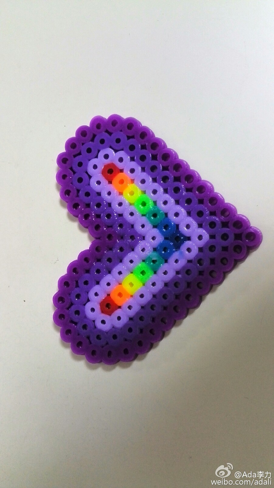

WXQ里有这么一个现象，有人进来发个红包，请群友帮忙投票，转发，点赞等。如果不认识也不了解对方，等于是纯冲着红包去做的，我觉得掉价。了解和认识的人，或许还可以帮个忙，这是人情。－ 金钱交易和人情绑定的话，金额小都会显得很low。
姣姣的小伙伴们玩起了一种新的玩意，五彩珠子排列成各种图案，然后用熨斗加热成型。--- 小学生群体每年都有稀奇古怪的新玩意出现，我现在好奇的是针对他们的传播途径，除了电视外，估计就是口碑传播了。研究下后者会很有意思。 
晒是关键点//@吴月超律师: 我们家宝宝买了一个滑板，然后她妈妈在微信群里秀了一下，然后就很多人问滑板在哪儿买的，一周之内宝宝的同学就都买了，他们就组织在公园里比赛，然后就更多人买了，更多人滑（我们家是女宝宝，滑板是男孩喜欢，在我们周围成了一个现象级产品了）。传播与带动路径非常高效。@Ada李力:姣姣的小伙伴们玩起了一种新的玩意，五彩珠子排列成各种图案，然后用熨斗加热成型。--- 小学生群体每年都有稀奇古怪的新玩意出现，我现在好奇的是针对他们的传播途径，除了电视外，估计就是口碑传播了。研究下后者会很有意思。


 网页链接
网页链接